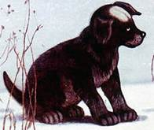

А. П. Чехов
Белолобый
(Время чтения: 9 мин.)

Старый сторож Игнат жил в зимовье с черной дворнягой Арапкой, у которой родился щенок - Белолобый. У старой и
слабой здоровьем волчихи, логовище которой было неподалеку, трое волчат. Однажды перед рассветом она отправилась
на охоту. Зверь подобрался к хлеву, проник в него через старую гнилую крышу. Волчица хотела поживиться ягненком.
Она спрыгнула вниз, под визг и лай схватила первое, что попалось, и умчалась. Оказалось, что добычей стал
белолобый щенок. Он увязался за старой хищницей и постепенно подружился с волчатами. Белолобый вернулся домой и
снова застал там волчиху, оставив голодного зверя вновь без добычи. Несмотря на жуткий голод и страдающих
детенышей, волчица была милосердна, она не навредила черному малышу. Игнат так и не догадался, что в его хлеву
дважды побывала мохнатая охотница, он обвинил в прорехах в крыше глупого щенка.
Голодная волчиха встала, чтобы идти на охоту. Ее волчата, все трое, крепко спали, сбившись в кучу, и грели друг
друга. Она облизала их и пошла.
Был уже весенний месяц март, но по ночам деревья трещали от холода, как в декабре, и едва высунешь
язык, как его
начинало сильно щипать. Волчиха была слабого здоровья, мнительная; она вздрагивала от малейшего шума и все
думала о том, как бы дома без нее кто не обидел волчат. Запах человеческих и лошадиных следов, пни, сложенные
дрова и темная унавоженная дорога пугали ее; ей казалось, будто за деревьями в потемках стоят люди и где-то за
лесом воют собаки.
-
Она была уже не молода и чутье у нее ослабело, так что, случалось, лисий след она принимала за собачий в
иногда
даже, обманутая чутьем, сбивалась с дороги, чего с нею никогда не бывало в молодости. По слабости здоровья
она
уже не охотилась на телят и крупных баранов, как прежде, и уже далеко обходила лошадей с жеребятами, а
питалась
одною падалью; свежее мясо ей приходилось кушать очень редко, только весной, когда она, набредя на зайчиху,
отнимала у нее детей или забиралась к мужикам в хлев, где были ягнята.
- В верстах четырех от ее логовища, у почтовой дороги, стояло зимовье. Тут жил сторож Игнат, старик лет
семидесяти,
который все кашлял и разговаривал сам с собой; обыкновенно ночью он спал, а днем бродил по лесу с
ружьем-одностволкой и посвистывал на зайцев. Должно быть, раньше он служил в механиках, потому что каждый
раз,
прежде чем остановиться, кричал себе: «Стоп, машина!» и прежде чем пойти дальше: «Полный ход!» При нем
находилась громадная черная собака неизвестной породы, по имени Арапка. Когда она забегала далеко вперед, то
он
кричал ей: «Задний ход!» Иногда он пел и при этом сильно шатался и часто падал (волчиха думала, что это от
ветра) и кричал: «Сошел с рельсов!»
-
Волчиха помнила, что летом и осенью около зимовья паслись баран и две ярки, и когда она не так давно
пробегала мимо, то ей послышалось, будто в хлеву блекли. И теперь, подходя к зимовью, она соображала, что
уже март и, судя по времени, в хлеву должны быть ягнята непременно. Ее мучил голод, она думала о том, с
какою жадностью она будет есть ягненка, и от таких мыслей зубы у нее щелкали и глаза светились в потемках,
как два огонька.
- Изба Игната, его сарай, хлев и колодец были окружены высокими сугробами. Было тихо. Арапка, должно быть,
спала под сараем.
- По сугробу волчиха взобралась на хлев и стала разгребать лапами и мордой соломенную крышу. Солома была
гнилая и рыхлая, так что волчиха едва не провалилась; на нее вдруг прямо в морду пахнуло теплым паром и
запахом навоза и овечьего молока. Внизу, почувствовав холод, нежно заблеял ягненок. Прыгнув в дыру, волчиха
упала передними лапами и грудью на что-то мягкое и теплое, должно быть, на барана, и в это время в хлеву
что-то вдруг завизжало, залаяло и залилось тонким, подвывающим голоском, овцы шарахнулись к стенке, и
волчиха, испугавшись, схватила, что первое попалось в зубы, и бросилась вон...

Ссылка